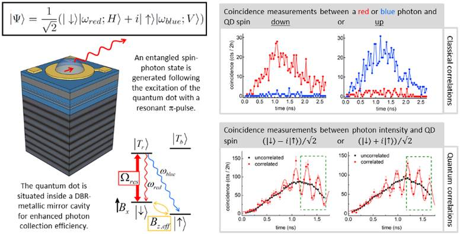
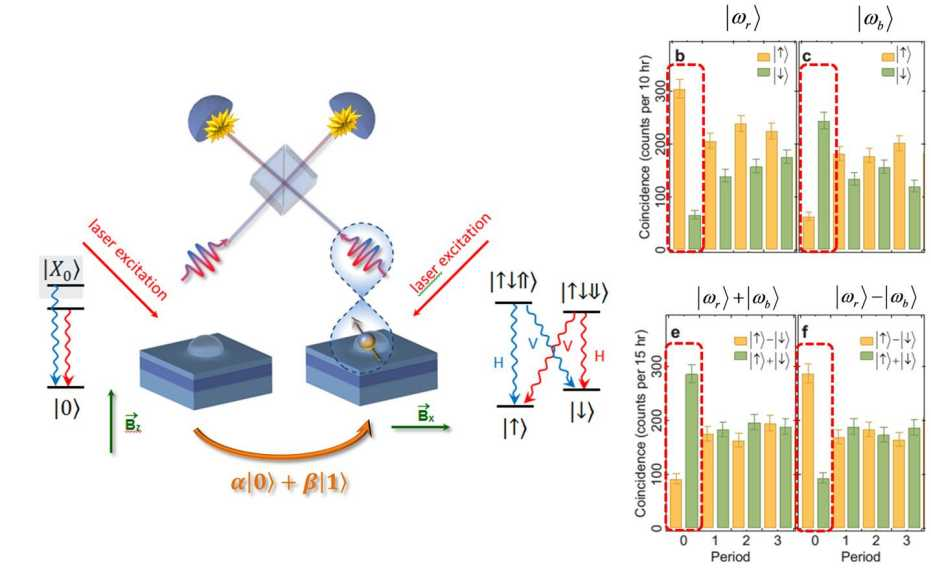
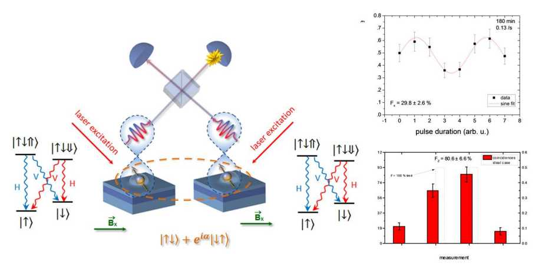
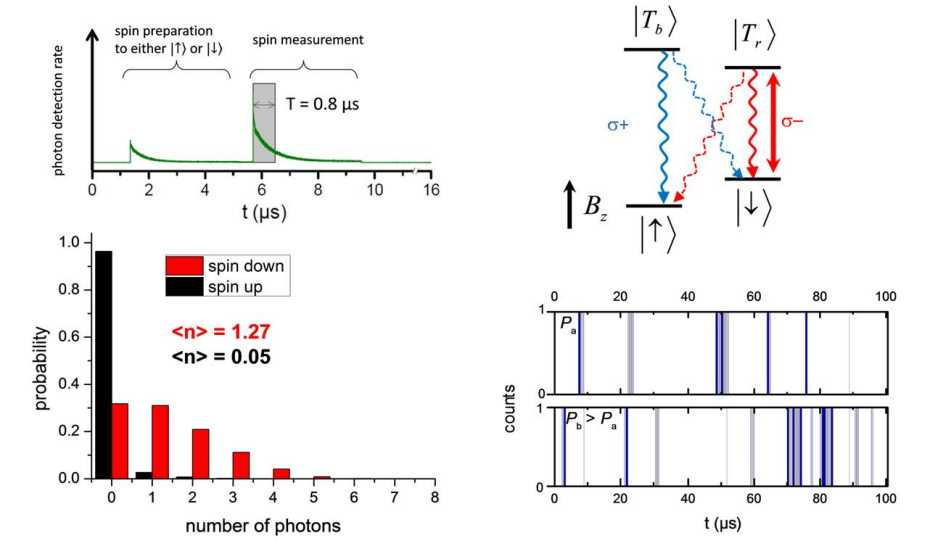
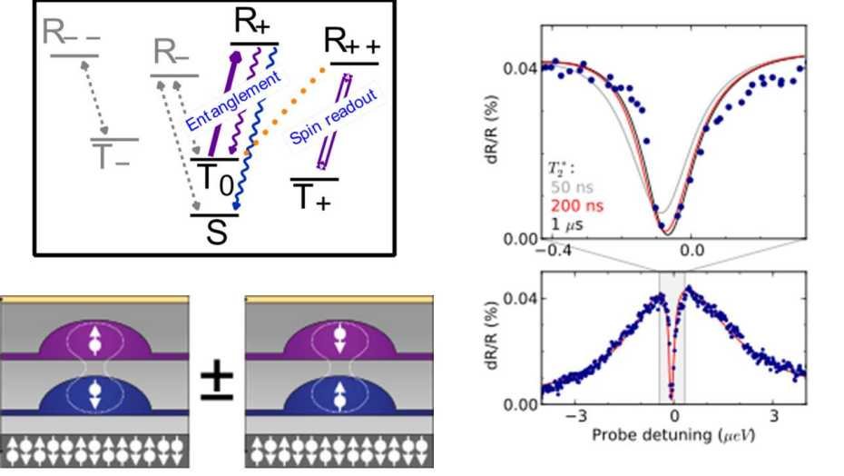
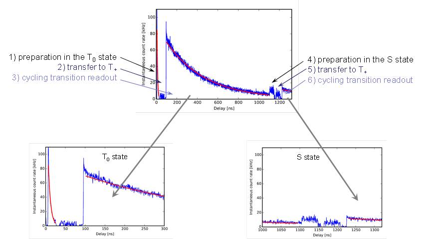

关于格拉斯哥
相关资料搜索
【如有侵权，请联系删除，谢谢！】
【Research future life】

1.逆向工程大脑

2.汽车中的人机交互
【设计半自动驾驶的反馈】 【虚拟现实】

3.用于机器人和假肢的太阳能合成皮肤
利用太阳光线为合成皮肤提供动力的新方法有助于创造能够使截肢者恢复触觉的高级假肢。
【纳米与量子世界】
1. QuantIC是英国在量子增强成像领域的量子技术中心
2. 国际马克斯普朗克
【Paul Scherrer研究所】

【超快激光物理:】 来源：量子电子学研究所
– 包括量子光学，量子结构工程，激光物理，超快现象和高场物理，为各级ETH学生提供物理课程的教学，包括量子光学和量子电子学专业讲座。
由7个研究小组组成:
量子点系统及量子纠缠
过去十年的实验研究表明，固态自旋允许在集成器件的长时间尺度上忠实地表示量子信息。另一方面，光子是量子信息传递的理想选择。因此，实现自旋和光子之间的量子界面已成为固态量子信息处理的有希望的方向。
量子点中的自旋光子界面
从传播光子传送到自旋量子位
在遥远的量子点空穴旋转之间产生预示的纠缠
量子点自旋的单次测量
量子点分子中的单重态 - 三重态量子位
量子点分子：赝自旋的循环过渡读数
飞秒激光脉冲操纵磁化的材料
一个多世纪以前首次证明的爱因斯坦 - 德哈斯效应提供了铁磁材料中磁性和旋转之间的有趣联系。
由ETH物理学家史蒂芬约翰逊领导的国际团队现已确定，该效应在亚皮秒时间尺度内发生的超快速过程中起着核心作用。


转载请注明来源，如有错误或不够清晰的表达，可以联系@qumoptly。
文章标题:关于格拉斯哥
本文作者:qumoptly
发布时间:2019-07-18, 21:46:32
最后更新:2019-07-19, 22:21:49
版权声明: "署名-非商用-相同方式共享 4.0" 转载请保留原文链接及作者。